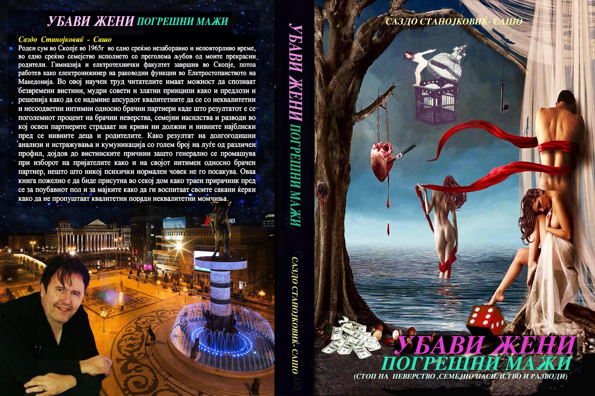
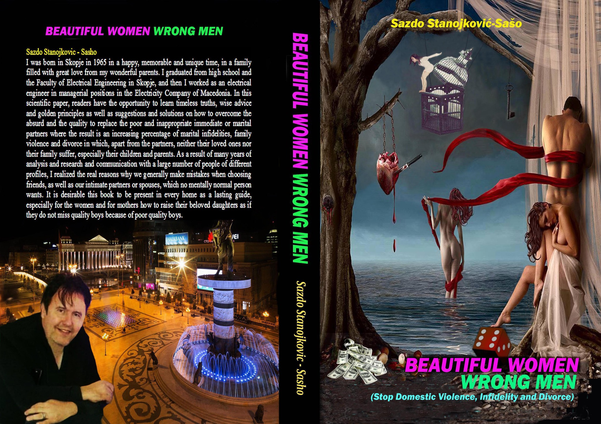
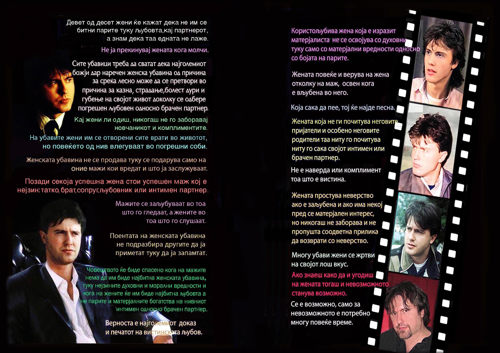

Убави жени погрешни мажи
Скопје 2022

САЗДО СТАНОЈКОВИЌ-САШО · 2022
Стоп за семејното насилство, неверствата и разводите
690 ден. / околу 11 €
МАКЕДОНСКИ
Доставениот опис се фокусира на изборот на партнер, љубовта, бракот, неверството, разводот и семејното насилство. Дел од текстот содржи силни авторски генерализации за жените, мажите, убавината, интелигенцијата и материјалниот интерес; платформата ги претставува како ставови на авторот, а не како утврдени факти.
Описот ги пренесува темите и самоопределбите од доставениот авторски материјал. Квалификации како „научен труд“, „универзални вистини“ и слично се третираат како авторски формулации, а не како независна оценка на платформата.
ENGLISH
Stop Domestic Violence, Infidelity and Divorce
The supplied description focuses on partner choice, love, marriage, infidelity, divorce and domestic violence. Parts of the text contain strong authorial generalizations about women, men, beauty, intelligence and material interest; the platform presents these as the author’s views rather than established facts.
ИНТЕРНЕТ-ПРЕГЛЕД / INTERNET PREVIEW
Доставените PDF-датотеки се интернет-презентации/прегледи. Тие се чуваат како канонски копии во архивата; дупликатите не се внесуваат повторно.
Скопје 2022
Skopje 2022
КОРИЦИ И ВИЗУЕЛНИ МАТЕРИЈАЛИ



ДОСТАПНОСТ / AVAILABILITY
Цената, залихата, испораката и евентуалната дигитална верзија ги потврдува авторот.
Контактирај го Саздо